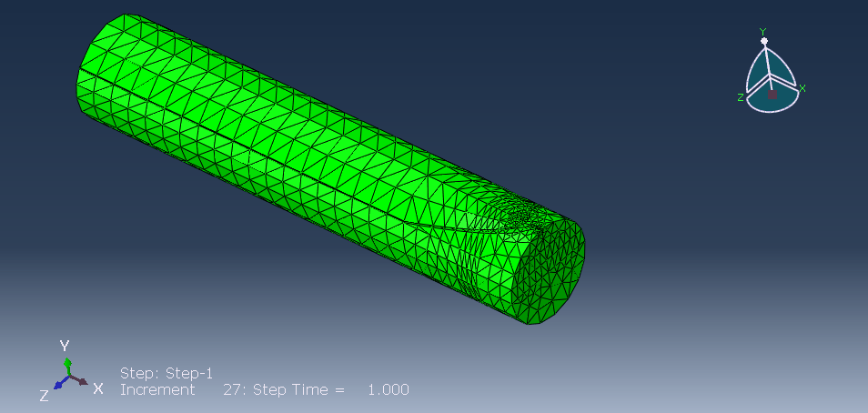
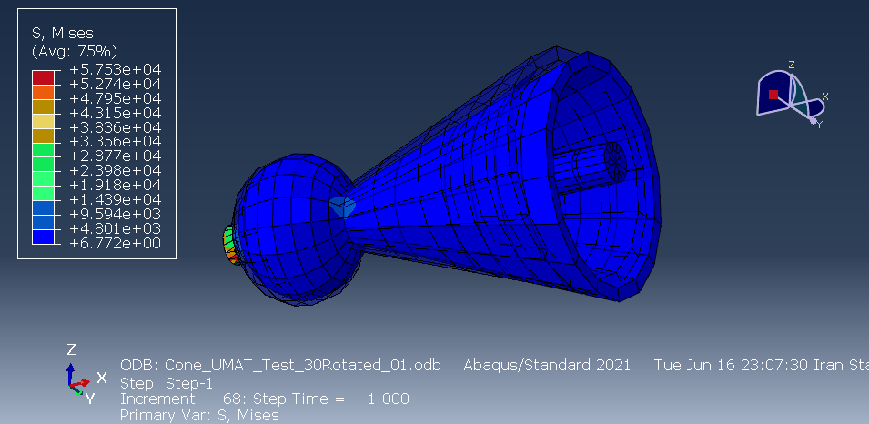

01 · PROJECT OVERVIEW
Finite element investigation of facial tissue–suture interaction
This project investigates the mechanical interaction between facial soft tissue and surgical sutures using nonlinear finite element analysis. The model is used to examine deformation and stress response around the suture region under prescribed loading and boundary conditions.
The work combines three-dimensional FE modeling, nonlinear material behavior, contact treatment, and Abaqus-based numerical post-processing.
02 · FINITE ELEMENT MODEL
Facial soft-tissue model

03 · MODEL DEVELOPMENT
- Geometry: Three-dimensional facial soft-tissue model with a suture representation.
- Elements: C3D8R / C3D8RH, depending on the model formulation.
- Soft-tissue material: Hyperelastic Yeoh formulation.
- Suture material: Linear-elastic polymeric suture representation.
- Interaction: Surface-to-surface contact where applicable.
- Boundary conditions: Prescribed constraints and loading applied to selected regions.
- Analysis: Nonlinear static analysis with large-deformation effects (NLGEOM).
04 · RELATED SUTURE MODELING
Barbed suture representation

This image is included as a related suture-modeling example and is not presented as a quantitative result of the facial model.
05 · COMPUTATIONAL WORKFLOW
Abaqus and Python workflow
06 · CONSTITUTIVE MODEL VERIFICATION
User-material verification example

This verification image documents the broader computational mechanics workflow; it is not presented as a direct result of the face–suture model.
07 · RESULTS
Quantitative evaluation
The project can be extended through systematic extraction of stress, strain, displacement, reaction-force, and other response measures to quantify the effect of suture configuration and loading.
08 · TECHNICAL SKILLS